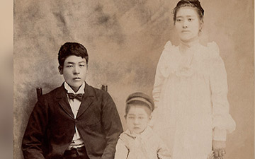
Matagoro and Naka
Matagoro (14 June 1878-15 March 1970), and Naka (Niwa) Kurasaki (24 Nov 1879-12 Jan 1970) were married in Japan. They left their home in Marakami Niigata, and sailed on the ship, "America Maru," arriving in Hawaii on December 4, 1899.
They left eldest son, Ray Matasaku (8 Mar 1898-10 May 1992), in Japan to be raised by relatives, as was the custom. After arriving in Hawaii, Jack Komaji (9 Sep 1900-Oct 1969) was born in Paajau, on the big island of Hawaii. Matagoro and Naka both worked on a sugar plantation.
This photo was taken on July 4, 1904. (l-r) Matagoro, 4-year-old Jack Komaji, and Naka. Territory of Hawaii.
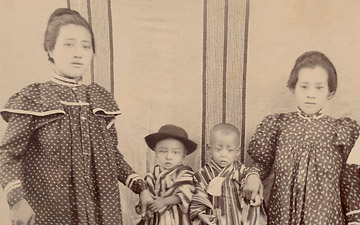
Naka Niwa
Daughter, Fujie, was born on April 24, 1906. Matagoro, Naka, Jack and Fujie arrived in San Francisco on July 3, 1906, after sailing on the S.S. Mongolia. San Francisco's great earthquake occured on April 18, 1906.
This photo was taken in Hawaii, Naka stands on the far left. Others are not identified and the photo is not dated. Circa early 1900's.
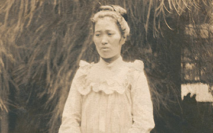
Matagoro and Naka's children
Matagoro and Naka's children were Ray Matasaku (8 Mar 1898-10 May 1992) born in Japan, Jack Komaji (9 Sep 1900-Oct 1969) and Fujie (24 April 1906-21 Sept 1975) were born in Hawaii, and one other baby died in hawaii.
Chiyoye Elise (19 July 1911-Nov 2000), Henry (15 April 1914-Sept 2001) and George Noboru (21 June 1919) were born in California.
This is a photograph of Naka in Hawaii. The photograph is not dated, circa 1900's.
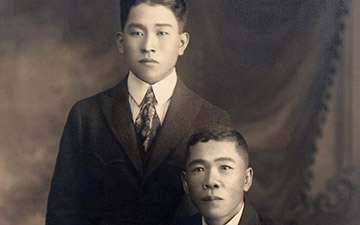
Jack Komaji with Shigazo Toyama
These photographs were taken in Honolulu, Hawaii on January 22, 1920. In this photo, Jack Komaji is identified as being 20-years-old with Shigazo Toyama, 44-years old. (His relation to the family has yet to be determined, though immigration records indicate a S. Toyama who traveled with Matagoro and Naka from Japan to Hawaii in 1899).
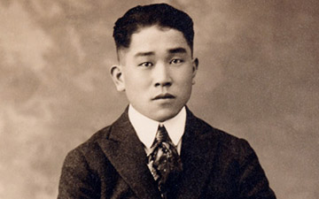
Jack Komaji Kurasaki
Portraits by J.M. Osumi, Army and Navy photographer, Honolulu, T.H. (Territory of Hawaii).
To establish proof of his Hawaiian birth (so the family could purchase land in California), Jack Komaji traveled to Hawaii and was investigated by the Office of Immigration in Hawaii on January 22, 1920. He returned to California on the "S.S. Nanking" in February, 1920.
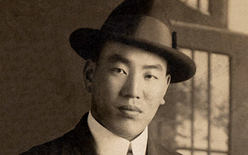
Ray Matasaku Kurasaki
Photographed in San Jose - date of photo is unknown.
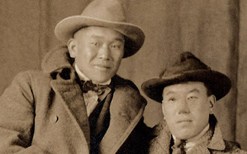
Jack Komaji and Ray Matasaku
Postcard photo of Jack Komaji and Ray Matasaku (right). February 23, 1920.
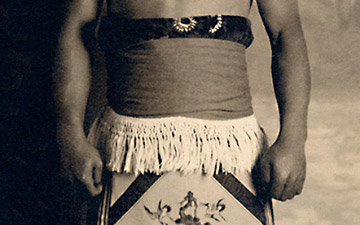
Sumo portrait of Jack Komaji Kurasaki
Photo taken at Ishino Studio, San Jose, California.
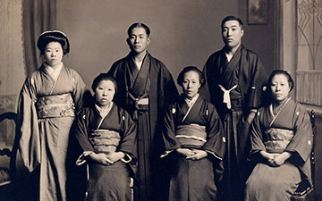
Jack Komaji and Kimi Niwa's marriage (photo one)
These photos were taken in Japan when Jack Komaji married Kimi Niwa. Kimi and Jack Komaji are standing to the left in photo above, Choki Niwa, Naka's yougest brother, stands to their right.
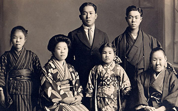
Jack Komaji and Kimi Niwa's marriage (photo two)
Kimi is seated second to left and Jack Komaji is standing at center. The others in these photographs are not yet identified. Photographed at Furuichi Studios, Niigata, Japan.
Jack Komaji and Kimi arrived in the port of San Francisco on June 11, 1922, and sailed on the SS "Korea Maru."
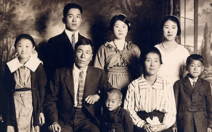
Kurasaki Family portrait, circa 1922
(Standing in rear, left to right) Jack Komaji, wife Kimi, and Fujie. (Front row, from left) Chiyoye Elise, Matagoro, George Noboru, Naka, and Henry. Photo taken at Ishino Studios, 221 Jackson Street, San Jose, CA.
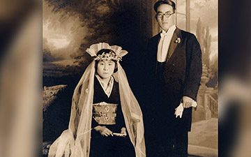
Ray Matasaku and Kiye Matsumura
Wedding photo of Ray Matasaku and Kiye Matsumura (8 Aug 1906-2 March 1995). Ishino Studio, San Jose, CA.
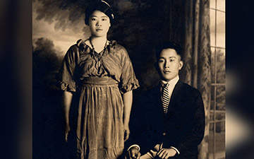
Kimi Niwa and Jack Kurasaki
Photo taken at same time as above, circa 1922.
Kimi (22 Nov 1902-17 Sept 1983) and Jack Komaji Kurasaki. Ishino Studio, San Jose, CA.
{kind=link}
{kind=link}
{kind=link}
{kind=link}
{kind=link}
{kind=link}
{kind=link}
{kind=link}
{kind=link}
{kind=link}
{kind=link}
{kind=link}
{kind=link}